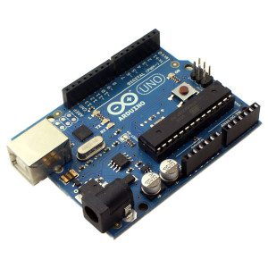
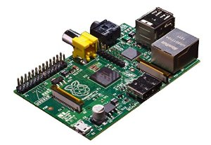
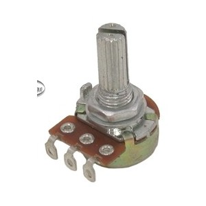
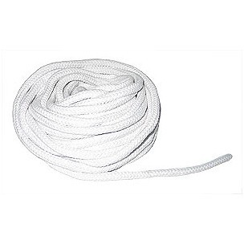
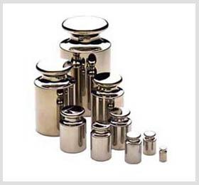

Materiales Utilizados en el proyecto
Arduino
| es una plataforma de hardware de código abierto, basada en una sencilla placa con entradas y salidas, analógicas y digitales, en un entorno de desarrollo que está basado en el lenguaje de programación Processing. Es un dispositivo que conecta el mundo físico con el mundo virtual, o el mundo analógico con el digital.
¿Cómo se usará en el proyecto? El arduino tendrá la función capturar los datos emitidos por los demás componentes del circuito. | 
|
Raspberry PI
| La Raspberry Pi es un pequeño ordenador de bajo costo, tan pequeño como una tarjeta de crédito con un mínimo de consumo eléctrico.
Excelente para desarrollar software, si eres principiante ó si eres experto es una excelente herramienta para desarrollar tus habilidades como programador.
Ideal para proyectos de control y automatización.
Puedes encontrar todos los accesorios que necesitas: case raspberry pi, cable raspberry pi, pi face, gertboard y otros accesorios raspberry pi.
¿Cómo se usará en el proyecto? como interfaz de comunicación con arduino, ademas será el servidor que permita el almacenamiento de las bariables en una base de datos para que se puedan gráficar en tiempo real y mostrarse en una interfaz web que estará alojada este mismo dispositivo (Raspberry) | 
|
Potenciómetro
| El potenciómetro es una resistencia que podemos controlar su valor. Entonces de esta forma podemos controlar indirectamente la intensidad de corriente que fluye por un circuito si se lo conecta en paralelo, o la diferencia de potencial si esta conectado en serie.
¿Cómo se usará en el proyecto? Éste elemento se usara conectado a un pin del arduino para poder regular la intencidad de sonido que emitirá la bocina. | 
|
Bocina
| El potenciómetro es una resistencia que podemos controlar su valor. Entonces de esta forma podemos controlar indirectamente la intensidad de corriente que fluye por un circuito si se lo conecta en paralelo, o la diferencia de potencial si esta conectado en serie.
¿Cómo se usará en el proyecto?Será utilizada que pueda emitir el sonido que hará que vibrar una cuerda y de este modo poder capturar variables como la frecuencia. | 
potenciómetro. |
Cuerda
| El concepto se suele utilizar para nombrar al producto formado por la unión de diversos hilos que se emplea para realizar ataduras o sujetar cosas.
¿Cómo se usará en el proyecto? La cuerda se utilizará para poder ver como actua las vibraciones emitidad por la bocina y así poder ver la longitud de onda y la amplitud de la misma. | 
|
Contrapesos
| Un contrapeso es un objeto que tiene una masa determinada, cuyo patrón de medida es el kilográmo.
¿Cómo se usará en el proyecto? La función que tendrán los contrapesos son: 1. tenzar la cuerda para ver como se ven afectadas las ondas en cada amónico según el peso que se coloque en cada iteración (armónico). 2. ¿cómo incide el peso sobre la frecuencia ?, es decir: como la frecuencia debe crecer o disminuir en comparación al peso colocado en la cuerda. | 
|